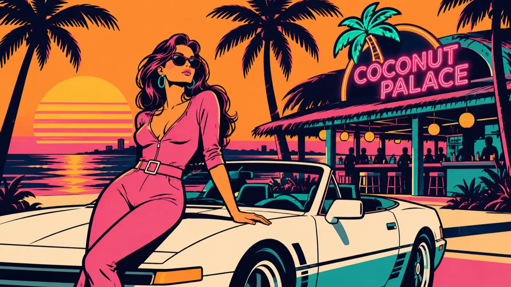
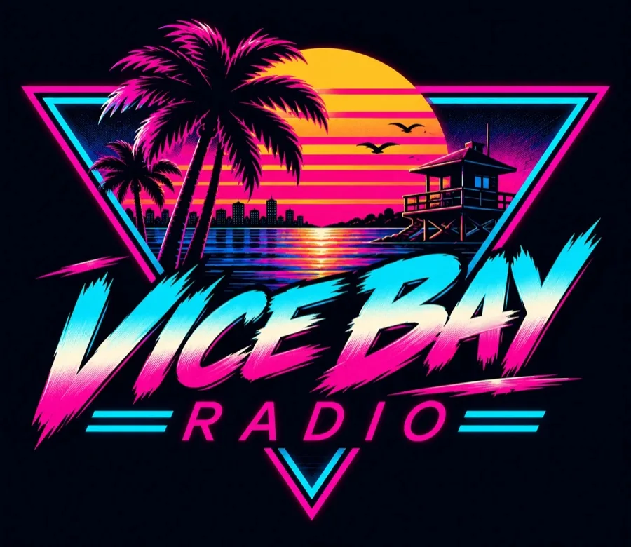

ست محطات FM من فايس باي، 1986. سينث ويف، تشيبتون، سالسا، أغانٍ هادئة وجاز، مع مذيعين وفواصل. الموسيقى المثالية للانتظار.
Musique libre CC BY · Animateurs et jingles OKALAM Studio

قريبًا على iPhone وAndroidRockstar showed six GTA 6 stations. Previews play on rockstargames.com, not here: rights.
The playlists Rockstar Games published on Spotify: every Vice City station, then Los Santos, then the GTA 6 trailer songs. Pick a station, the set switches on.
Pick a station
Full playback with a Spotify account, 30 s previews without. Official Rockstar Games playlists, embedded Spotify player.
قريبًا على iPhone وAndroid